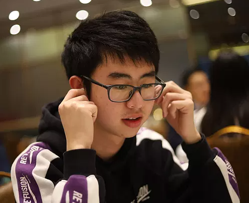

Pressure and Morphogenesis
I investigate how endolymphatic pressure canalizes semicircular canal morphology and how genetic programs regulate this process during vestibular organ development.
Ph.D. Candidate, Duke University School of Medicine
I study how physical pressure and genetic regulation shape the zebrafish inner ear. My work combines confocal imaging, CNN-based segmentation, 3D morphometrics, scRNA-seq, and spatial transcriptomics to turn complex tissue morphogenesis into measurable biology.

Research Focus
I investigate how endolymphatic pressure canalizes semicircular canal morphology and how genetic programs regulate this process during vestibular organ development.
I build segmentation and 3D analysis pipelines for confocal datasets, including CNN-based otic vesicle lumen segmentation, registration, and epithelial signal quantification.
I integrate scRNA-seq and spatial transcriptomics to construct atlases of the otic vesicle during semicircular canal morphogenesis.
Selected Work
Developed image-analysis and omics workflows for zebrafish inner ear morphogenesis, including otic vesicle lumen segmentation, quantitative confocal analysis, mutant scRNA-seq, and a multi-modal atlas of canal formation.
Worked on heart regeneration in the Poss Lab and BMP signaling in Drosophila embryogenesis in the Di Talia Lab.
Investigated the relationship between sympathetic neuron activity and heart regeneration, including ultrasound imaging of mouse hearts and quantitative analysis of cardiac function.
Studied E. coli K1 vesicle trafficking at Nankai University and metabolic engineering strategies for fructooligosaccharide production.
Toolkit
Python, PyTorch, NumPy, Pandas, Matplotlib, HPC workflows, statistical analysis, data visualization.
Seurat, Scanpy, pseudobulk analysis, GSEA, pseudotime, differential expression, spatial transcriptomics integration.
Zebrafish embryology, microinjection, CRISPR-Cas9, pharmacological perturbation, confocal imaging, ultrasound imaging of mouse hearts, molecular cloning, transgenic line generation.
Publications
2026
Wang, J.*, Heikes, K.L.*, Wu, Y., Briggs, A.B., Li, K., Suriato, N.E., Surapaneni, S., Horstmeyer, R., Bagnat, M., and Munjal, A. bioRxiv. Co-first authors.
doi:10.64898/2026.07.22.7401362025
Mori, Y., Robin, P., Briggs, A.B., Levic, D.S., Wang, J., Heikes, K.L., Bagnat, M., Hannezo, E., and Munjal, A. Preprint.
doi:10.1101/2025.09.25.6786072025
Mori, Y., Smith, S., Wang, J., Eliora, N., Heikes, K., and Munjal, A. Development 152, dev203003.
2020
Zhao, Y., Che, Y., Zhang, F., Wang, J., Gao, W., Zhang, T., and Yang, C. Science of The Total Environment.
Education
Ph.D. program in Cell and Molecular Biology. GPA: 3.985/4.
Bachelor of Science, Biology Poling Class. GPA: 89.57/100.
Contact